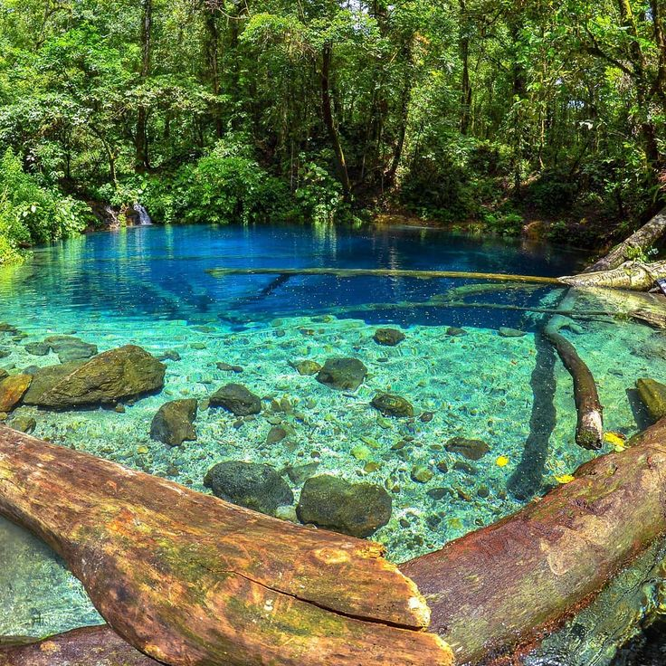
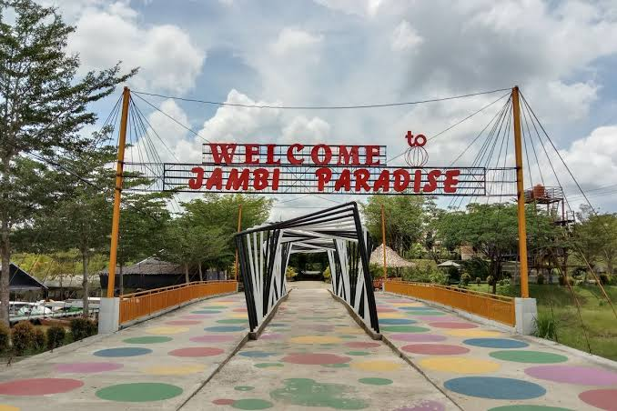
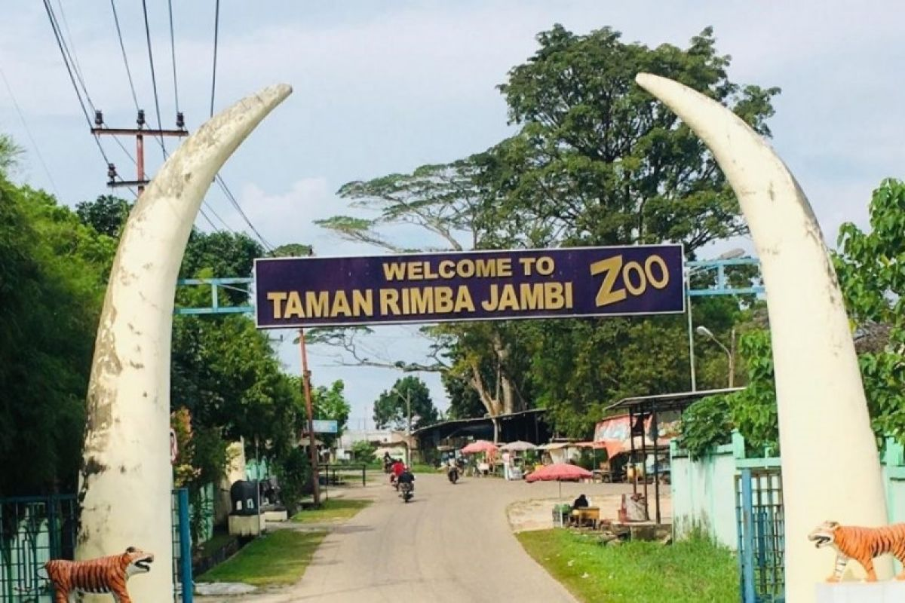
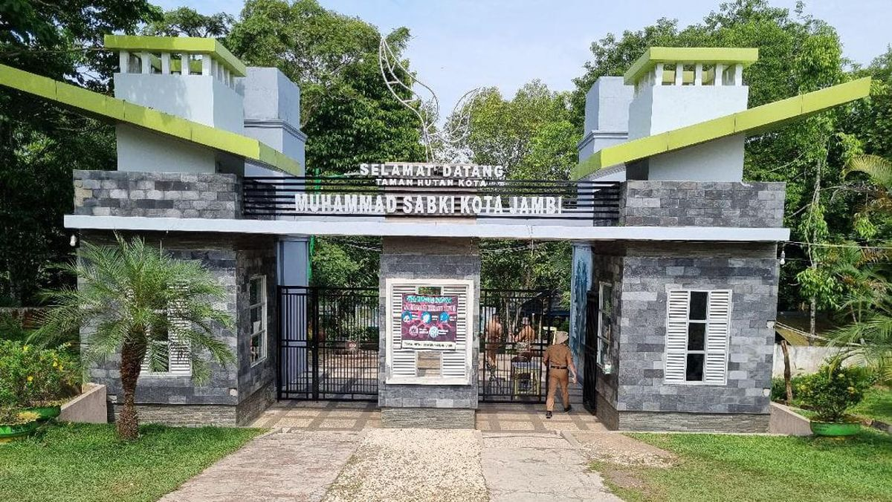

Wisata Sejarah
Info praktis perjalanan
Informasi praktis delapan destinasi: sejarah, alam, rekreasi keluarga, serta ruang publik Kota Jambi.
Pilihan destinasi
Saring berdasarkan kategori untuk menemukan destinasi yang cocok dengan rencana perjalanan Anda.







Ringkasan lengkap
Versi ringkas untuk membandingkan semua destinasi dalam satu pandangan.
| Kategori | Nama Destinasi | Harga Tiket | Jam Operasional |
|---|---|---|---|
| Sejarah & Budaya | Candi Muaro Jambi | Rp 15.000 | 08:00 - 18:00 |
| Menara Gentala Arasy | Jembatan gratis; museum Rp3.000 | Jembatan 24 jam; museum 05:30 - 00:00 | |
| Wisata Alam | Danau Kaco | Rp10.000 | 24 jam |
| Danau Sipin | Gratis | 24 jam | |
| Rekreasi Keluarga | Taman Wisata Jambi Paradise | Rp30.000 | 09:00 - 22:00 |
| Taman Rimbo Zoo Area | Rp6.000 anak; Rp12.000 dewasa | 08:00 - 17:00 | |
| Wisata Kota | Tugu Keris Siginjai | Gratis | 24 jam |
| Hutan Kota Muhammad Sabki | Rp5.000 | 08:00 - 18:00 | |
| Total Destinasi Wisata yang Didata: 8 Lokasi | |||